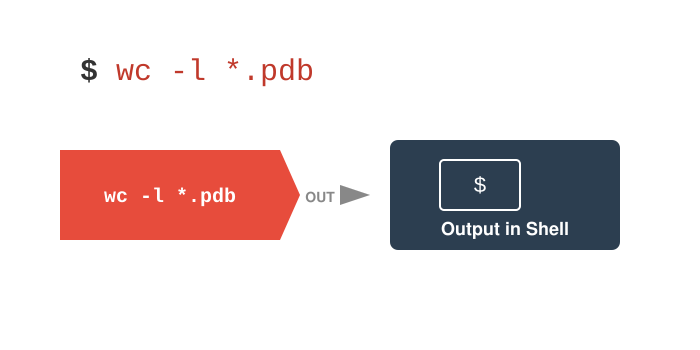
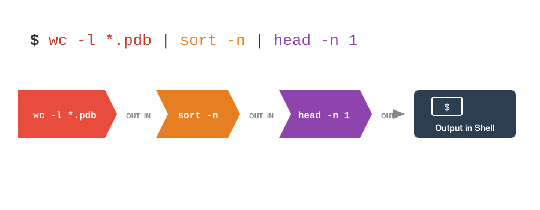

6 Files, Pipes, and Redirection
After completing this chapter, you will be able to:
- Explain the Unix philosophy and how it shapes command-line tools
- Read files efficiently using
cat,less,head, andtail - Use input and output redirection to work with files, and capture error messages separately from results
- Chain commands together using pipes
- Apply these tools to process genomic data files
In the previous chapter (Chapter 5), you learned to navigate the filesystem and manipulate files—creating, copying, moving, and deleting them. But files contain data, and data science is ultimately about extracting meaning from data. In this chapter, we explore how Unix tools let you examine, transform, and combine data with remarkable elegance.
The secret to Unix’s power lies in its philosophy of small, focused tools that work together through pipes and redirection. Instead of one massive program that tries to do everything, Unix provides dozens of simple tools that you can combine in endless ways. Learning to think in terms of pipelines—data flowing from one tool to the next—will transform how you approach computational problems.
6.1 The Unix Philosophy
Unix tools are designed around a simple but powerful philosophy (Kernighan & Pike, 1984):
Write programs that do one thing and do it well. Write programs to work together. Write programs to handle text streams, because that is a universal interface.
This philosophy has profound implications for how you work:
- Small, focused tools: Each command does one specific task excellently
- Composition: Complex operations are built by combining simple tools
- Text as interface: Programs communicate through text, making them compatible
Understanding this philosophy transforms how you approach computational problems. Instead of seeking one program that does everything, you learn to construct pipelines from simple components.
6.2 Standard Streams: The Foundation
Every Unix program has three standard communication channels, called streams. Understanding these streams is essential to understanding how Unix tools communicate with each other and with you.
┌──────────────┐
stdin ───>│ │───> stdout
(0) │ Program │ (1)
│ │───> stderr
└──────────────┘ (2)- Standard Input (stdin)
- Where programs read input. By default, this is your keyboard—when a program waits for input, it’s reading from stdin. File descriptor 0.
- Standard Output (stdout)
-
Where programs write normal output. By default, this appears on your terminal screen. When you run
ls, the file listing goes to stdout. File descriptor 1. - Standard Error (stderr)
- Where programs write error messages. This also appears on your terminal by default, but it’s a separate channel from stdout. This separation lets you capture errors separately from normal output. File descriptor 2.
By default, a command’s stdout simply flows back to the terminal window you typed it in (Figure 6.1). A program does not know—or care—whether its output is going to the screen, to a file, or to another program; that abstraction is the key to everything that follows.

The magic of Unix is that these streams can be redirected—connected to files instead of the keyboard or screen, or piped directly into other programs. This is what makes it possible to build powerful pipelines where data flows through a series of transformations.
6.3 Reading Files
Before you can process data, you need to see what’s in your files. In a graphical environment, you might double-click a file to open it in an application. In Unix, we have several tools for examining file contents, each suited to different situations.
Choosing the Right Tool
Choosing the right viewing tool depends on your goal and the file’s size. Table 6.1 summarizes when to use each:
| Command | Best For |
|---|---|
cat |
Small files, concatenating files |
less |
Large files, browsing, searching |
head |
First few lines of a file |
tail |
Last few lines, monitoring logs |
wc |
Counting lines, words, characters |
cat: Concatenate and Display
The cat command (short for “concatenate”) is the simplest way to view a file—it dumps the entire contents to stdout. The name reflects its original purpose: concatenating (joining) multiple files together.
The cat command is similar to print() in R—it simply outputs what you give it. This makes it useful for small files and for combining files, but it’s not appropriate for large files.
Never use cat on large files! It will flood your terminal with text, and there’s no way to stop it except Ctrl+C. For genomic data files (which can be gigabytes), always use head to peek at the beginning, less to browse interactively, or process through pipes.
less: The Pager
For large files, less is the tool of choice. It’s a pager—a program that displays content one screen at a time, letting you scroll forward and backward, search for patterns, and navigate through gigabytes of data without loading it all into memory.
If you’re wondering about the name: the original pager was called more (as in “show me more of this file”). When a better version was created, someone named it less because “less is more.”
Key navigation commands in less are listed in Table 6.2:
less
| Key | Action |
|---|---|
| Space, f | Forward one page |
| b | Back one page |
| g | Go to beginning |
| G | Go to end |
| /pattern | Search forward |
| ?pattern | Search backward |
| n | Next search match |
| N | Previous search match |
| q | Quit |
head and tail: Peek at Extremes
A special use of tail is monitoring files that are being written:
This is invaluable for watching job progress on computing clusters.
6.4 Output Redirection
Redirection connects a program’s output to a file instead of the terminal (Figure 6.2).

> sends a command’s stdout into a file instead of to the screen.
Overwrite: >
> is shorthand for 1>, “redirect file descriptor 1.” You will rarely type the 1, but seeing it makes the 2> in Section 6.4.3 obvious.
The > operator overwrites existing files without warning! Double-check your filenames before running commands with >.
Append: >>
Redirecting Errors: 2>
Sometimes you want to separate normal output from error messages:
# Send errors to a file, output to screen
$ ls /nonexistent 2> errors.txt
# Save output and errors to different files
$ command > output.txt 2> errors.txt
# Discard errors (send to /dev/null)
$ command 2> /dev/null
# Combine stdout and stderr to one file
$ command &> all_output.txt
# The older, portable spelling of the same thing: send stdout to the
# file, then send stderr (2) to wherever stdout (1) is now going
$ command > all_output.txt 2>&1Why Separate Streams Matter: A Pipeline with Error Logs
The payoff of keeping stderr separate becomes clear in a multi-step bioinformatics pipeline. Each tool below writes its results to stdout, which is piped to the next tool, while its diagnostic messages go to stderr, which is captured in a separate log file per stage. (The pipeline is schematic—the exact options depend on the tools you use—but the pattern is universal.)
# Decompress reads, trim adapters, align to a genome, and sort the
# alignments, keeping a separate error log for every stage
zcat reads.fastq.gz 2> unzip_errors.log |
cutadapt -a AGATCGGAAGAGC - 2> trim_errors.log |
bowtie2 -x genome -U - 2> align_stats.log |
samtools sort -o reads.sorted.bam - 2> sort_errors.log
# Afterwards, check all the logs at once
$ cat *_errors.log | grep -E "ERROR|WARNING"Because the data went through the pipe and the messages went to the logs, the data stream is never contaminated by a warning message, and you can review every stage’s complaints in one place after the run finishes. A - given as a filename tells many tools to read from stdin instead of a file. This pattern—data on stdout, diagnostics on stderr, one log per stage—is exactly how you should structure the SLURM jobs you will write for Talapas (Chapter 20).
6.5 Input Redirection
Input redirection feeds file contents to a program’s stdin:
While many commands can read files directly as arguments, input redirection is essential for programs that only read from stdin.
A related construct is the here-document, <<, which feeds several lines typed directly in the terminal (or in a script) to a command’s stdin, up to a closing marker word of your choosing (EOF by convention):
Here-documents are handy in scripts for writing a small configuration file or a usage message without creating a separate file; you will see one in the complete script at the end of Chapter 8.
6.6 Pipes: Connecting Commands
Pipes (|) are the secret weapon of Unix and one of its most elegant innovations. A pipe connects the stdout of one command directly to the stdin of the next, allowing you to chain tools together into a processing pipeline:
Data flows through the pipeline like water through physical pipes, transformed at each step (Figure 6.3). The output of command1 becomes the input to command2, whose output becomes the input to command3. No intermediate files are created—the data exists only in memory as it flows between programs.

| connects the stdout of one command to the stdin of the next, so data passes from tool to tool without ever being written to disk.
This approach, combined with the Unix philosophy of small focused tools, means you can construct sophisticated data processing workflows by combining simple commands. Each command does one thing well, and the pipe connects them into something greater than the sum of its parts.
The pipe symbol | is typically located above the backslash \ on US keyboards (Shift + backslash). It may be in different locations on international keyboards.
If you’re familiar with R’s tidyverse, the Unix pipe | works similarly to R’s pipe operators (%>% or |>, introduced in Chapter 11). In R, you might write:
The Unix equivalent would chain commands the same way:
Both pass output from one operation to the next, building complex transformations from simple steps.
Simple Pipe Examples
Here are some basic examples to illustrate how pipes work:
# Count files in a directory
$ ls | wc -l
# Sort and remove duplicates
$ cat names.txt | sort | uniq
# Find CSV files in a listing
$ ls -l | grep "\.csv"
# Show only the first 5 entries of a long listing
$ ls -l | head -n 5
# Count lines that match a pattern
$ grep "pattern" file.txt | wc -l
# Page through help output (useful for long manual pages)
$ man ls | less
$ ls --help | lessThe last example is particularly practical: help pages can be long, and piping them to less lets you scroll through at your own pace. A few more patterns you will use constantly:
# Extract column 2 of a CSV, count each distinct value, sort by frequency
$ cut -d',' -f2 data.csv | sort | uniq -c | sort -rn
# Find all .txt files below the current directory and sort them by line count
$ find . -name "*.txt" | xargs wc -l | sort -n
# Watch a growing log file and show only the lines that mention errors
$ tail -f pipeline.log | grep ERRORThe second example introduces xargs, which turns the lines it reads from stdin into arguments for another command—here, the file names found by find become the arguments to wc -l.
Building Complex Pipelines
Start simple and build up:
# Step 1: Look at raw data
$ cat data.csv | head
# Step 2: Extract a column (field 2, comma-delimited)
$ cat data.csv | cut -d',' -f2 | head
# Step 3: Remove header, sort
$ cat data.csv | cut -d',' -f2 | tail -n +2 | sort
# Step 4: Count unique values
$ cat data.csv | cut -d',' -f2 | tail -n +2 | sort | uniq -c
# Step 5: Sort by frequency
$ cat data.csv | cut -d',' -f2 | tail -n +2 | sort | uniq -c | sort -rn- Start with
headto see sample data - Add one command at a time
- Verify output at each step
- Build up to the complete pipeline
- Save complex pipelines in scripts (Chapter 8)
The tee Command
Sometimes you want to save intermediate results while continuing the pipeline. The tee command splits output:
This saves the sorted data to sorted.txt while simultaneously passing it to uniq.
Longer pipelines are easier to read when each stage sits on its own line. Bash lets a command continue onto the next line whenever a line ends with |, and a # comment may follow the pipe on the same line, so you can annotate each step:
(The alternative you will see elsewhere, a \ at the very end of each line, also continues a command, but nothing—not even a comment—may follow the backslash.)
6.7 Essential Pipeline Tools
Several commands are designed to work in pipelines:
sort: Order Lines
# Alphabetical sort
$ sort names.txt
# Numeric sort
$ sort -n numbers.txt
# Reverse sort
$ sort -r data.txt
# Sort by specific column (field 3, tab-delimited)
$ sort -t$'\t' -k3 data.tsv
# Sort numerically by field 2
$ sort -t',' -k2 -n data.csv
# Sort by column 2 only, numerically, largest first
$ sort -k2,2 -nr data.tsv
# Sort and drop duplicate lines in one step (same as sort | uniq)
$ sort -u data.txtWriting the key as -k2,2 (“start and end at field 2”) restricts the comparison to that one column; a bare -k2 sorts on field 2 through the end of the line, which is rarely what you want. By default sort splits fields on whitespace, so -t is needed only for other delimiters such as commas.
uniq: Remove Duplicates
cut: Extract Columns
join: Combine Two Tables on a Shared Column
join merges two files line by line wherever they share a value in a key column, much like a database join or left_join() in R (Chapter 11). Both files must be sorted on the key, and by default the key is the first field:
# samples.tsv: sample_id treatment counts.tsv: sample_id read_count
$ sort -k1,1 samples.tsv > samples.sorted.tsv
$ sort -k1,1 counts.tsv > counts.sorted.tsv
$ join samples.sorted.tsv counts.sorted.tsv
S01 control 1204331
S02 control 1187452
S03 IPTG 1311908
# Join on column 2 of the first file and column 1 of the second
$ join -1 2 -2 1 file1.txt file2.txtFor anything beyond a quick lookup, the data-frame joins in R or Python are more forgiving, but join is handy for stitching together two large tab-separated files without leaving the shell.
tr: Translate Characters
grep: Search for Patterns
We’ll cover grep extensively in Chapter 7, but here are basic uses:
6.8 Working with Large Genomic Data
Let’s apply these tools to real bioinformatics scenarios. Genomic data files are often massive—the human genome (about 3.1 billion base pairs) is roughly 1 GB compressed and over 3 GB as plain text, and a single sequencing run can produce far more. These files are a perfect use case for pipes and redirection: you must process them as streams, never load them whole.
FASTA Format Basics
FASTA files store sequences with headers starting with >:
>sequence1 description
ATGCGATCGATCGATCGATCG
ATCGATCGATCGATCGATCGA
>sequence2 another description
GCTAGCTAGCTAGCTAGCTAGFASTQ Format Basics
Raw sequencing reads come in FASTQ format, which extends FASTA with a quality score for every base. Each read occupies exactly four lines: a header starting with @, the sequence, a + separator, and a string of ASCII-encoded quality scores the same length as the sequence (the encoding is explained in Section J.4):
@SEQ_ID_001
GATTTGGGGTTCAAAGCAGTATCGATCAAATAGTAAATCCATTTGTTCAACTCACAGTTT
+
!''*((((***+))%%%++)(%%%%).1***-+*''))**55CCF>>>>>>CCCCCCC65The rigid four-line structure makes FASTQ files easy to slice with awk’s line counter NR (covered in Section 7.10):
FASTQ files are almost always gzip-compressed (.fastq.gz or .fq.gz); read them without decompressing using zcat, as shown below.
Downloading Genomic Data
wget and curl both download files from a URL. The backslash \ lets a long URL span two lines, and the .gz extension tells you the file is compressed.
# Download the human reference genome (GRCh38) from NCBI using wget
$ wget https://ftp.ncbi.nlm.nih.gov/genomes/all/GCF/000/001/405/\
GCF_000001405.40_GRCh38.p14/GCF_000001405.40_GRCh38.p14_genomic.fna.gz
# Or using curl, saving under a shorter name
$ curl -o human_genome.fa.gz https://ftp.ncbi.nlm.nih.gov/genomes/all/GCF/000/001/405/\
GCF_000001405.40_GRCh38.p14/GCF_000001405.40_GRCh38.p14_genomic.fna.gzThe compressed file is about 1 GB; decompressed, it is over 3 GB. Check that you have the disk space before you gunzip it—or, better, don’t decompress it at all.
Working with Compressed Files
Most genomic data is compressed. Unix tools handle this seamlessly:
# View compressed file without extracting
$ zcat genome.fa.gz | head
$ gunzip -c genome.fa.gz | head # same thing
# Page through or search a compressed file
$ zless genome.fa.gz
$ zgrep ">" genome.fa.gz | wc -l
# Compare sizes before and after decompression
$ ls -lh human_genome.fa.gz
$ gunzip -k human_genome.fa.gz # -k keeps the .gz file
$ ls -lh human_genome.fa
# Decompress and recompress
$ gunzip genome.fa.gz # Creates genome.fa (removes the .gz)
$ gzip genome.fa # Creates genome.fa.gz (removes the original)
$ gzip -k genome.fa # Keep original file
# Concatenate several compressed files into one, without decompressing to disk
$ zcat lane1.fastq.gz lane2.fastq.gz | gzip > combined.fastq.gzUse head, tail, less, or streaming tools instead. Dumping a 3 GB file to the terminal with cat will make your session unusable for a long time. On macOS the built-in zcat expects .Z files; use gzcat or zcat < file.gz (see Section J.5).
Test on a Subset First
Never develop a pipeline against a full-size file. Pull out a small piece, get the commands right, then run them on the whole thing:
# The first 20,000 lines of a compressed FASTA (no decompression to disk)
$ zcat genome.fa.gz | head -n 20000 > subset.fa
# The first 1,000 reads (4 lines each) of a FASTQ file
$ zcat reads.fastq.gz | head -n 4000 > subset.fastq
# Lines 1000-2000 of a plain-text file
$ sed -n '1000,2000p' annotations.gff > subset.gffAnalyzing Sequence Data
# Count sequences (headers start with >)
$ grep -c "^>" sequences.fa
# List all sequence headers
$ grep "^>" sequences.fa
# Calculate total sequence length (remove headers and newlines)
$ grep -v "^>" genome.fa | tr -d '\n' | wc -c
# Count nucleotides
$ grep -v "^>" genome.fa | tr -d '\n' | fold -w1 | sort | uniq -cExample Pipeline: GC Content
Let’s calculate the GC content (percentage of G and C bases) of a genome:
This pipeline:
-
grep -v "^>"— removes header lines -
tr -d '\n'— removes newlines to get one long sequence -
tr -cd 'GCgc'— deletes everything except G and C -
wc -c— counts remaining characters
The backslash \ at the end of a line continues the command on the next line, making complex pipelines more readable.
Finding Restriction Sites
Stream Processing: Download and Analyze
You can process data without saving intermediate files:
# Download, decompress, and analyze in one pipeline
$ curl -s https://url/to/genome.fa.gz | \
gunzip -c | \
grep -v "^>" | \
tr -d '\n' | \
wc -c
# Download and keep only the first megabase of sequence
$ curl -s https://url/to/genome.fa.gz | \
gunzip -c | \
grep -v "^>" | \
tr -d '\n' | \
cut -c1-1000000 > first_megabase.txtThis streams data through memory, never writing to disk—essential when working with files larger than your available storage.
6.9 Best Practices
Pipeline Efficiency
-
Never load a whole genome into memory: stream it through pipes with
head,less,zcat, and friends -
Work with
.gzfiles directly:zcat,zgrep, andzlessavoid a 3 GB decompressed copy on disk - Test on a subset first: extract a few thousand lines for development (Section 6.8.5)
- Filter early: Reduce data volume as early as possible in the pipeline
-
Test incrementally: Build and verify step by step, and save intermediate results with
teewhen debugging -
Use appropriate tools:
lessfor viewing,headfor sampling - Save complex pipelines: Put them in shell scripts (Chapter 8) so they are documented and repeatable
-
Remember:
>overwrites,>>appends
Defensive Practices
6.10 Summary
This chapter covered the tools for reading, writing, and connecting Unix commands:
- Standard streams (stdin, stdout, stderr) enable program communication
- Output redirection (
>,>>) saves results to files;2>captures error messages separately, one log per pipeline stage - Input redirection (
<) feeds file contents to commands;<<supplies several lines inline - Pipes (
|) connect commands into powerful pipelines - Tools like
sort,uniq,cut,join,tr, andgreptransform data - Genomic data analysis leverages these tools at scale: stream compressed files, test on subsets, never
cata genome
The Unix pipe is one of the most elegant ideas in computing history. By designing programs that read from stdin and write to stdout, the creators of Unix made it possible to combine simple tools into sophisticated pipelines. You don’t need to write a custom program for every analysis—you can often assemble existing tools to do exactly what you need.
These concepts form the foundation of Unix data processing. Master them, and you can construct solutions to virtually any text-processing challenge. In the next chapter (Chapter 7), we’ll dive deeper into grep and regular expressions, giving you even more powerful pattern-matching capabilities.
For quick reference on Unix commands and pipeline tools covered in this chapter, see Appendix A.
Additional Reading
To explore pipes, redirection, and text processing further:
- Data Science at the Command Line by Jeroen Janssens — A comprehensive guide to using command-line tools for data analysis
- The Art of Command Line — A curated collection of tips and techniques for command-line mastery
- AWK Programming Language — The GNU Awk manual for advanced text processing
- sed & awk by Dale Dougherty and Arnold Robbins — A comprehensive guide to these powerful text manipulation tools
For bioinformatics-specific applications:
- Bioinformatics Data Skills by Vince Buffalo (Buffalo, 2015) — An excellent resource covering Unix tools in a genomics context
- NCBI FTP Guide — How to download genomic data from NCBI
Exercises
Exercise 1: Redirection Practice
- Use
ls -lato list your home directory and save the output tohome_contents.txt - Append the current date and time to the end of
home_contents.txt - Count how many lines are in the file
- Display only the last 5 lines
Exercise 2: Pipeline Construction
Create a file numbers.txt with one number per line (include some duplicates):
Using pipes: 1. Sort the numbers numerically 2. Remove duplicates 3. Show only the top 3 numbers 4. Save the result to top_three.txt 5. Use tee to display the top 3 on screen and save them in one command 6. Count how many unique numbers there are and append that count to top_three.txt
Exercise 3: Text Processing
Given a CSV file with format name,score,grade, write a pipeline to: 1. Extract just the scores (column 2) 2. Sort them numerically in descending order 3. Calculate how many scores there are 4. Find the top 5 scores
Exercise 4: Genomic Data
Download a small bacterial genome and: 1. Count the number of sequences 2. Find the total sequence length 3. Count each nucleotide (A, T, G, C) 4. Search for a specific restriction enzyme site